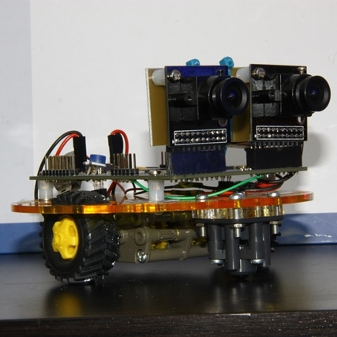

This page will be updated with current and past projects that I have done.
The Part III Project at University of Southampton is the main individual design project of the course. I have undertaken designing a Stereoscopic Mapping Robot, named "The Columbus". The final robot was able to capture stereo images, store them to an SD card and move. It was then later adapted to respond to movement.
